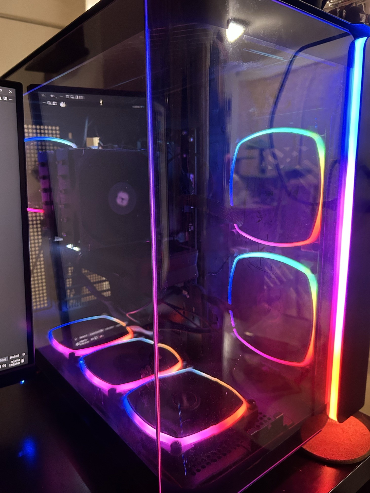

pc#1

specs:
- Cpu: AMD Ryzen 5 7600x
- GPU: Intel Arc B580 12GB
- Mobo: B650M GAMING PLUS WIFI
- Ram: 32GB CL 30 6000 MHz
- Memory: 1 TB gen 4 M.2 NVME
This is the computer I built for myself. It is a midrange pc with a clear upgrade path. I plan to turn this into a high range build when I graduate.